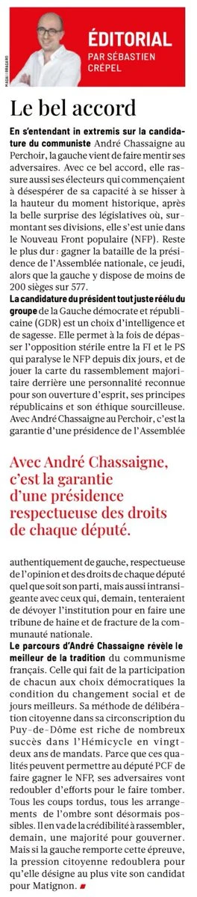

Publication sur X
André Chassaigne. Une candidature de rassemblement
Date de publication sur X · 18 juillet 2024
Repères éditoriaux
Nous avons soutenu la candidature d’André Chassaigne, présentée comme une candidature de rassemblement.
Texte de la publication sur X
Homme intègre, respecté, @AndreChassaigne une candidature de rassemblement. https://t.co/OoPL4imYs1

Sources
PCF 79 · @79Parti sur X · AR-0005-TW-1813828844660695081
À lire aussi · Sénatoriales 2026. Le PCF 79 présente Frédéric Giraud et Valérie Mazé